Step 1: Get A Project(Or Make Your Own...) I Will Be Using Extra_Recipe By Xerub Available Here But Use Whatever You Want.
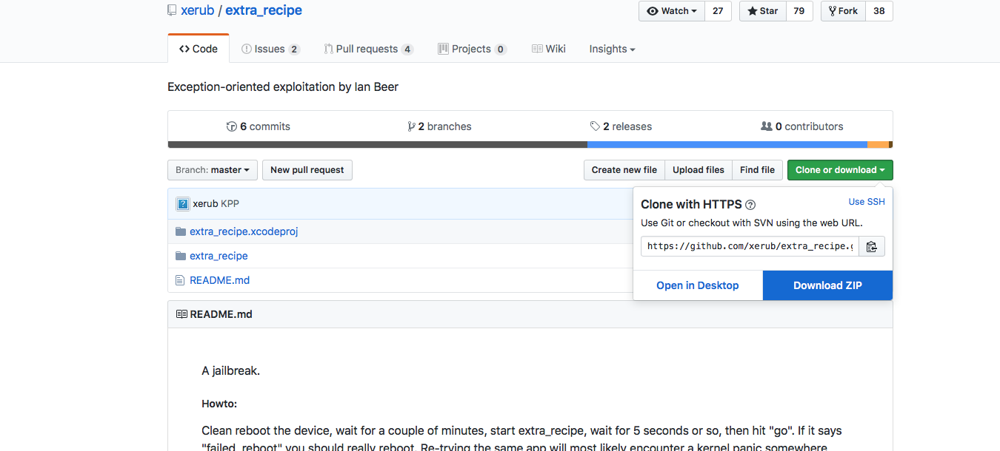
Step 2: In Finder; Go To Applications, Then Right Click XCode, Then Hit View Package Contents
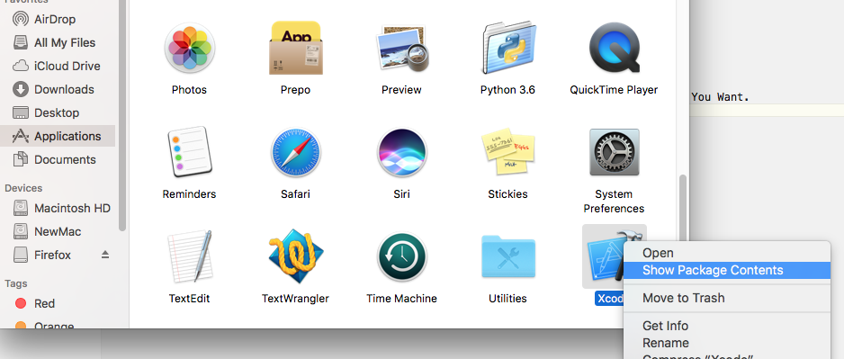
Step 3: Then Go To Contents, Developer, Platforms, iPhoneOS.platform, Developer, SDKs, iPhoneOS.sdk, Then Open SDKSettings.plist With XCode
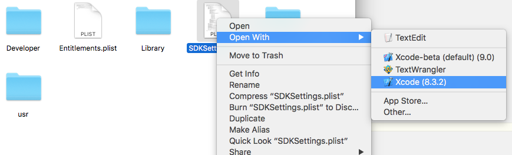
Step 4: You Should See A XCode Window Of The plist. Click the Arrow Beside DefaultProperties and Look For CODE_SIGNING_REQUIRED. Change The Value To NO and Hit Command-S
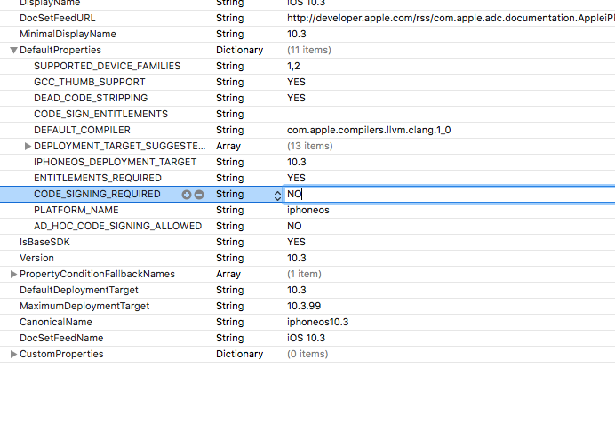
Step 5: Open The .xcodeproj With XCode and Click The Name Of The Project In The Top Left. Go To Build Settings And Search Code Sign.
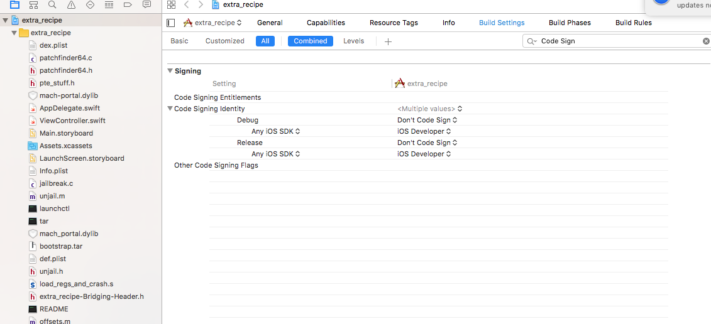
Step 6: In The Section 'Signing' Click The Arrow Beside Code Signing Identity(If Not Automatically Done) And Set Any iOS SDK For Debug And Release To "Don't Code Sign"
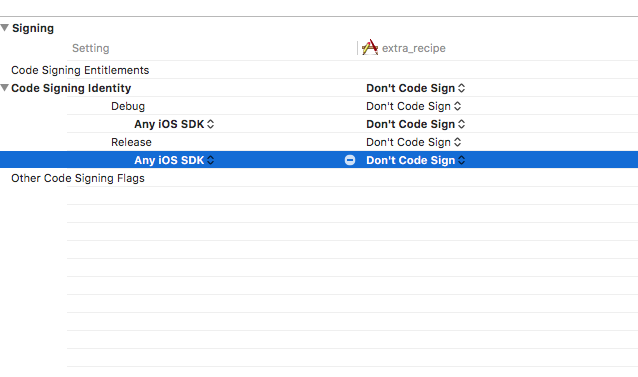
Step 7: In The Top Where It Shows The App; Choose "Generic iOS Device"
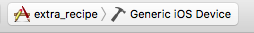
Step 8: In The Top Menu(MacOS Bar) Choose Product-Archive
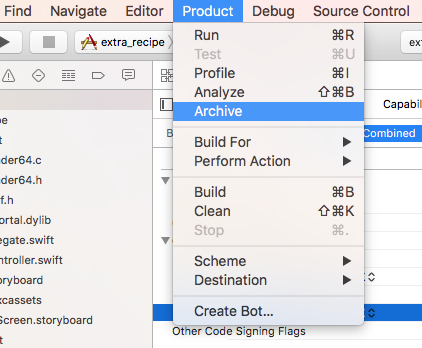
Step 9: Wait A Minute For The App To Compile...
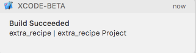
Step 10: Right Click The Archive And Hit Open In Finder
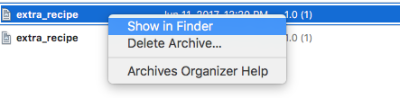
Step 11: You Are Now Probably Wondering "Hey! What! This isnt a ipa!"
And Your Right... Not Yet It Isnt.
Right Click The .xcarchive And Choose Show Package Contents.
Go To Products, Applications And Then There Is A .app Folder
Then Open iTunes And Drag The .app Into iTunes
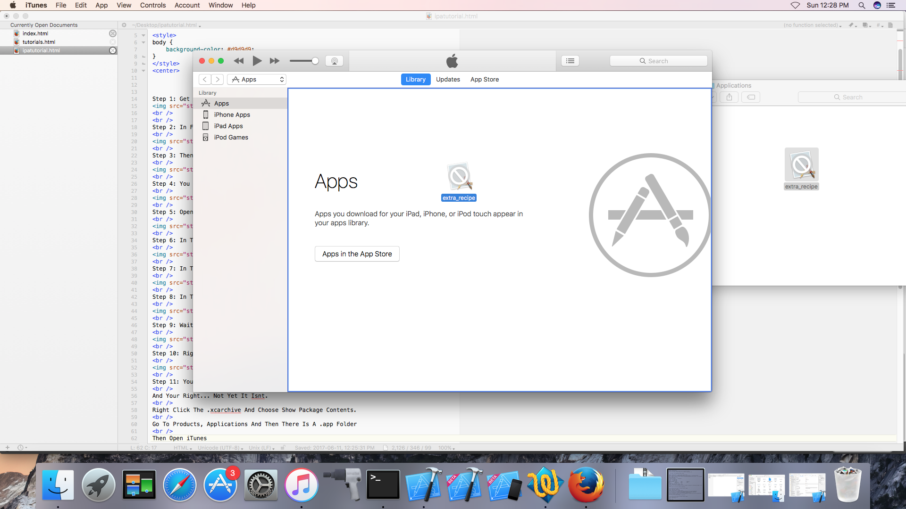
Step 12: In iTunes Right Click The Newly Made App And Hit "View In Finder" And You Have Found The .ipa!
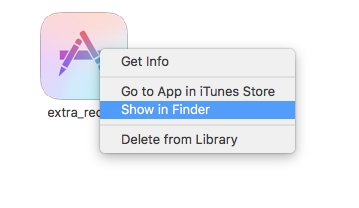
You Can Distribute This .ipa To Anyone And It Will Work With Cydia Impactor
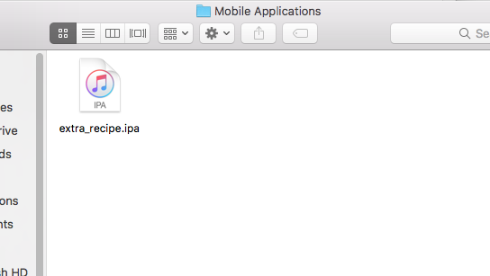
Thanks For Reading And I Hope This Helped!